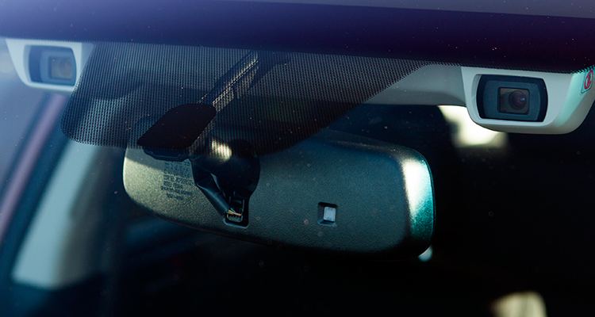

Cross-traffic alert warns you of traffic approaching from the sides as you reverse. The warning usually consists of an audible chirp and a visual cue in either the outside mirror or the rear camera’s dash display. The more advanced systems can also pick out bicycles and pedestrians.
CR’s take: Cross-traffic alert systems are especially handy if you have to back into a traffic lane when adjacent parked cars obscure your view.
Forward-collision warning (FCW) and autobrake
Also called a pre-crash warning system, these stand-alone or combined radar-, laser-, or camera-based systems warn drivers of an impending collision by using visual, auditory, or physical cues. Most vehicle systems also pre-charge the brakes and take other steps to prepare for impact. If the driver ignores the warnings, systems with autonomous braking, or autobrake, will apply partial or full braking force. They can be active at anywhere from walking to highway speeds.
CR’s take: Sometimes you want or need to stay closer to the car ahead of you than at other times, so systems that let you adjust your follow distance have a distinct advantage.
Blind-spot monitoring (BSM) and assist
A blind-spot monitoring system uses radars or cameras to scan the areas beside and behind you, looking for vehicles entering or lurking in your blind zones. When such a vehicle is detected, an illuminated icon appears in or near the appropriate side-view mirror. If you signal a turn while a car is in your blind zone, some systems send a stronger alert, such as a blinking light or louder chirps. More advanced systems help keep you in your own lane by applying the brakes on one side of the vehicle.
CR’s take: In general, we like these systems and find them helpful.
Pedestrian detection and braking
Pioneered by Volvo and now offered by others, pedestrian detection can recognize a person straying into a vehicle’s path. Some will automatically apply the brakes, if needed, sometimes partially and sometimes to a complete stop. Some newer systems can also detect bicyclists.
CR’s take: They’re a good investment, especially if you often drive in cities or other populous areas.
Adaptive headlights
As you turn the steering wheel adaptive headlights will swivel, which helps illuminate the road when going around curves. A 2014 IIHS study found that adaptive headlights improved drivers’ reaction times by about a third of a second. That could be just enough to avoid, say, hitting a parked car on a dark road.
CR’s take: Our drivers have mixed feelings about adaptive headlights. The wider view can be helpful, but the swiveling motion of the light path can be a little distracting, especially if the headlight beams’ motion isn’t exactly synchronized with the steering wheel’s.

Automatic park assist
The system will identify a parallel or perpendicular parking space your car can fit into. Once found, the system steers the car into the space; some can also exit from parallel parking spaces. The driver still does the braking and has to follow commands from the system.
CR’s take: These can be awkward to initialize. The driver has to activate the system and then drive by an open space for the system to recognize the spot. It may not recognize the parking space the first time. But most do a good job at steering the car into the spot.
Toyota Integrated Safety - Pre-collision System with Pedestrian-avoidance Steer Assist